OpenAgents: An Open Platform for Language Agents in the Wild
OpenAgents：一个面向真实场景（in the wild）语言 Agent 的开放平台
简介
现有语言 Agent 框架多为面向开发者的概念验证，缺乏应用级设计与普通用户入口，而 OpenAI 的闭源产品又无法被复用与评测。OpenAgents 以开源平台填补该空缺，提供三个 Agent：用 Python/SQL 与数据工具做分析的 Data Agent、接入 200+ 日常 API 插件并支持嵌入自动选插件的 Plugins Agent、通过 Chrome 扩展直接操控用户浏览器的 Web Agent。方法上基于 ReAct 式提示循环，配套工具解析器、Docker/SQL 沙箱、DataModel 数据线性化、历史截断、流式输出解析与失败重试等工程组件。论文最有价值的结论是系统总结了从原型走向真实部署的工程挑战：提示指令累积数百 token 对上下文的压力、真实世界不可控因素、响应速度与准确率的权衡、以及难以区分 LLM 能力缺陷与业务逻辑缺陷的评测复杂性。对团队而言，这是一份关于'如何把 LLM Agent 真正用起来'的一手工程实践参考。
问题
现有语言 Agent 框架（LangChain、BabyAGI 等概念验证实现）主要面向开发者，忽视非专业用户访问与应用级设计；现有 Agent 基准在预先构建的受控环境中做确定性评测，无法覆盖真实开放环境与真实用户需求；而 OpenAI 的 Advanced Data Analysis、Plugins、Browse with Bing 等产品因商业考虑未开源，阻碍了用户免费使用与开发者、研究者在其上探索、评测和改进。论文要解决的是：构建一个开源、可部署、可托管的平台，让普通用户、开发者与研究者都能在真实场景中使用、构建与评测语言 Agent。
方法
平台分两部分：User Interface（前后端，处理错误处理、数据流式传输等业务逻辑）与 Language Agent（语言模型+工具接口+环境）。Agent 采用基于 ReAct 的提示方法，按 Observation→Deliberation→Action 循环执行，提示模型输出易解析文本，由解析器转成代码或 API 调用。三个 Agent：(1) Data Agent：Python/SQL 代码生成与执行，集成 Kaggle 数据搜索、Data Profiling、ECharts 工具，并将代码生成下沉到内嵌 LLM 的工具中；(2) Plugins Agent：200+ 插件，用 Instructor 文本嵌入按用户指令自动选择插件，从 RapidAPI/OpenAI plugins store 扩容插件；(3) Web Agent：通过 Chrome 扩展与 Chrome Debugger API 操控用户浏览器，chat agent 将任务分解为子指令后委派给 web agent。工程组件包括：DataModel 抽象（十余个基础类，把表格/数据库/图像等线性化为 LLM 与前端可消费的格式）、MessageDataModel 按轮次截断历史处理 token 溢出、基于自动机的流式 token 角色识别、LLM key pool 缓解限流、失败分类与重试、最大等待时间，以及附录 C/D 公开的 system prompt、格式约束、retry/stop prompt 模板。
关键结果
集成 200+ 日常 API 插件工具（来源含 RapidAPI、OpenAI plugins store），并实现基于 Instructor 文本嵌入的插件自动选择
建立十余个（over ten）基础 DataModel 类，封装表格/数据库/图像等多形态数据并线性化供 LLM 与前端消费
未在论文中说明：正文未报告量化基准评测结果（如任务成功率、与基线的准确率对比），以平台构建与部署经验总结为主
创新点
区别于两类已有工作：概念验证框架（LangChain、BabyAGI 等）只提供面向开发者的原型与控制台接口；受控环境基准（编码、工具调用、网页浏览）在预构建环境中做确定性评测。OpenAgents 的差异点在于：(1) 开源完整业务逻辑与前后端代码，可本地部署；(2) 提供面向非程序员的 Web UI，强调 swift responses 与 common failures 处理；(3) 定位为 in-the-wild 的人机协作评测平台，记录完整交互轨迹与用户反馈；(4) 明确总结真实部署特有问题：流式输出、token 溢出、API 服务不稳定、CAPTCHA/广告干扰、性能与用户体验权衡——这些在以往 agent 研究中常被忽略。
团队参考意义
相关度级别：high
命中能力域：3.3 Agent 架构与工具使用 | 3.2 提示工程 | 3.1 上下文工程与记忆 | 3.5 评测与可靠使用 | 3.4 多智能体协作
理由：论文与团队'把模型用好而非训练模型'的定位高度契合，是不训练模型、纯靠提示与工程手段构建生产级 Agent 应用的完整案例。3.3 核心命中：ReAct 式 agent loop、工具解析与调用、Python/SQL 沙箱、Chrome Debugger 操控浏览器、插件自动选择与扩容、失败重试；3.2 核心命中：附录 C/D 完整公开 system prompt、格式约束、retry/stop prompt，并讨论为后端格式/美观/安全累积指令的提示设计挑战；3.1 命中：MessageDataModel 历史截断、DataModel 数据线性化、Redis/MongoDB 分层存储与 grounding source pool，直接对应上下文窗口管理与结构化上下文组织；3.5 命中：定位为 human-in-the-loop 的 in-the-wild 评测平台，记录交互轨迹与用户反馈，并总结流式响应、失败处理、评测复杂性等可靠性议题；3.4 轻度命中：chat agent 将用户指令分解为子任务并委派给 web agent 的两 Agent 分工模式，可作为多 Agent 编排的入门参考。
建议动作：深入精读并做内部分享
中文全文
arXiv:2310.10634v1 [cs.CL] 2023年10月16日
OpenAgents : AN OPEN PLATFORM FOR LANGUAGE AGENTS IN THE WILD
OpenAgents：面向真实场景语言智能体的开放平台
Tianbao Xie ∗♠♢ Fan Zhou ∗♠♢ Zhoujun Cheng ∗♠♢ Peng Shi ∗♢ Luoxuan Weng ∗♢ Yitao Liu ∗♠♢ Toh Jing Hua ♢ Junning Zhao ♢ Qian Liu ♡♢ Che Liu ♢ Leo Z. Liu ♢ Yiheng Xu ♠♢ Hongjin Su ♠♢ Dongchan Shin ♠♢ ♣ ♠♢
Caiming Xiong Tao Yu
♠ 香港大学 ♢ XLang Lab ♡ Sea AI Lab ♣ Salesforce Research
代码：https://github.com/xlang-ai/OpenAgents 演示：https://chat.xlang.ai 文档：https://docs.xlang.ai/
摘要
语言智能体（language agents）展现出这样的潜力：能够利用自然语言在多样化环境中完成多样而复杂的任务，尤其是当其构建于大语言模型（LLMs）之上时。当前的语言智能体框架旨在简化概念验证（proof-of-concept）语言智能体的构建，却忽视了非专业用户对智能体的访问，并且很少关注应用层面的设计。我们提出 OpenAgents，一个面向日常生活真实场景、用于使用和托管语言智能体的开放平台。OpenAgents 包含三个智能体：(1) Data Agent（数据智能体），借助 Python/SQL 及数据工具进行数据分析；(2) Plugins Agent（插件智能体），配备 200 多个日常 API 工具；(3) Web Agent（网页智能体），可自主浏览网页。OpenAgents 让普通用户能够通过一个针对快速响应与常见故障进行优化的网页用户界面与智能体功能进行交互，同时为开发者和研究人员提供在本地环境中无缝部署的体验，从而为打造创新的语言智能体、促进真实世界评估奠定基础。我们阐明了其中的挑战与机遇，期望为未来真实世界语言智能体的研究与开发奠定基础。
c. 语言智能体
![Figure 1: The OpenAgents platform for general users, developers, and researchers. (a) General users can interact with the agents via our online web interface, instead of programmer-oriented console or packages. (b) Developers can effortlessly deploy the frontend and backend for further developments given our codes. (c) Researchers can build new language agents or agent-related methods given the examples and shared components, and see how they perform with the web UI. Our OpenAgents serves to be a simple and versatile platform for using, developing, and evaluating language agents.](assets/a768/figures/fig_1.png)
∗ 同等贡献。
1 INTRODUCTION
智能体（intelligent agents）通常被宽泛地概念化为自主的问题解决者，它们能够感知自身环境、进行决策并对该环境采取行动（Wooldridge & Jennings, 1995; Sutton & Barto, 2005; Russell, 2010）。随着大语言模型（large language models, LLMs）的出现（Brown et al., 2020; Chen et al., 2021; Chowdhery et al., 2022; OpenAI, 2023b; Touvron et al., 2023），来自学术界、工业界和开源社区的近期实现已利用这一概念创建了语言智能体（language agents）。这些智能体能够利用自然语言在多样化环境中执行各种复杂任务，展现出显著潜力（Yao et al., 2022b; Chase, 2022; Gravitas, 2023; OpenAI, 2023a; Wang et al., 2023a）。
与此同时，当前的智能体框架，如 Chase (2022)、Gravitas (2023)、Xu et al. (2023a)、Nakajima (2023)、Chen et al. (2023)、Zhou et al. (2023c)，主要提供了面向开发者的概念验证实现和控制台界面。这往往限制了更广泛用户群体的使用，尤其是不熟悉编程或控制台的用户。当前的智能体基准测试（benchmark）是在特定环境中构建的，用于确定性评估，尤其涉及编程（Yang et al., 2023a）、工具调用（Li et al., 2023c; Patil et al., 2023; Qin et al., 2023b）、网页浏览（Shi et al., 2017; Yao et al., 2022a; Deng et al., 2023; Zhou et al., 2023b）或上述组合（Liu et al., 2023）的场景。这些工作为智能体评估提供了初步探索，而智能体的一般使用必然要与更加开放或无限制的环境以及带有各自特殊需求和材料的真实用户相连接。
为了面向更广泛的用户群体开发由 LLM 驱动的产品，OpenAI 借助其进一步训练的模型（这些模型已被逆向工程破解并得到许多人的认可，参见 Zheng et al. (2023b) 和 Gou et al. (2023)）、业务逻辑代码以及精心培育的软件社区（例如 OpenAI 插件商店），打造并部署了设计精良的产品 1，具体包括 Advanced Data Analysis（此前称为 Code Interpreter）、Plugins 以及 Browse with Bing。尽管取得了巨大成功，但出于商业考虑，这些模型和业务逻辑代码并未开源，这不仅阻碍了用户的自由访问，也阻碍了开发者和研究人员对其进行进一步的探索、评估和改进。
有鉴于此，OpenAgents 秉持让智能体的使用大众化这一动机而诞生，它是一个用于使用和托管智能体的开源平台，目前涵盖三个不可或缺的智能体：使用 Python 和 SQL 进行数据分析的 Data Agent、支持 200 多种工具调用的 Plugins Agent，以及可自主浏览网页的 Web Agent。我们相信，大语言模型（LLM）要充分发挥其潜力，就必须从纯粹理论性或以开发者为中心的工具，转变为能够服务于多样化用户群体的动态交互系统。如图 1 所示，普通用户可以通过在线网页用户界面（Web UI）轻松探索智能体的能力，而无需任何编程专业知识。此外，OpenAgents 提供完整的业务逻辑和研究代码，使开发者能够轻松地将其部署在本地，也使研究人员能够进一步深入剖析并构建语言智能体。最后，综合以上所述，OpenAgents 旨在成为一个真实且全面的人在回路（human-in-the-loop）智能体评估平台：出于真实需求，真实用户与智能体交互以完成其任务，而完整的人与智能体交互轨迹和用户反馈都会被记录下来，以供进一步评估。与现有的基准测试（benchmark）和平台相比，OpenAgents 提供了一个真实世界环境，智能体在其中应对各种真实的用户需求。
在构建 OpenAgents 的过程中，我们首先强调通过 LLM 提示（prompting）有效指定应用需求的重要性，这一过程通常需要精心设计指令，以适配后端逻辑、提升输出美观度并防范对抗性输入。我们的研究结果表明，此类指令的累积有时会相当庞大，从而在 token 限制和 LLM 的上下文处理方面带来挑战。此外，为了实现有效的真实世界部署，智能体模型不仅必须展现出高性能，还必须能够处理实时交互场景（例如流式传输），以提供最佳的用户体验。再者，我们的探索发现，当前的研究往往倾向于理想化的性能指标，有时会将关键的真实世界考量置于次要地位，例如系统响应速度与准确性之间的权衡，以及当应用层面的故障出现时所引入的微妙复杂性，这可能掩盖 LLM 的真实能力。
对于基于 OpenAgents 的未来方向和扩展，我们设想将面向研究人员扩展新的智能体以及与智能体相关的方法、模型和工具。此外，内置的 Web UI 为在真实需求下于真实世界中进行人在回路的智能体与 LLM 评估和交互铺平了道路，这将使自然语言处理（NLP）和人机交互（HCI）社区受益。最后，我们希望我们的代码库——其中包含开箱即用的前端和后端代码以及智能体的共享组件——能够激发更多创新应用的开发。
1 https://chat.openai.com
2
2 RELATED WORKS AND PRELIMINARIES
构建能够在特定环境中智能运行的智能体，在传统人工智能（Kaelbling et al., 1987; Maes, 1990; Brooks, 1991; Russell, 2010）、强化学习（Sutton & Barto, 2005; Mnih et al., 2013; Finn et al., 2017）以及近期基于大语言模型（LLM）构建的语言智能体（Yao et al., 2022b; Yang et al., 2023a; Wang et al., 2023a）等相关领域中有着悠久的历史。
一般而言，语言智能体可以被形式化为一个部分可观测马尔可夫决策过程（POMDP）( H , S , A , O , T , R )，其中包含自然语言空间 H、状态空间 S、动作空间 A、观测空间 O、转移函数 T ∶ S × A → S 以及奖励函数 R ∶ S × A → [ 0 , 1 ]。给定对话历史（用户查询与智能体响应）h ∈ H，智能体会生成可执行动作 a t ∈ A 并与环境进行交互。若一个动作位于动作空间 A 之内，并且会引起状态变化 s t + 1 ∈ S，同时产生作为观测 o t + 1 ∈ O 的执行反馈，则该动作是可执行的。交互循环不断重复，直到作为动作生成了某些特定的停止标记（stop tokens）。值得注意的是，目前大多数基于 LLM 的语言智能体通常无需训练，因此奖励往往不被考虑。
表 1：OpenAgents 与现有在智能体概念上构建原型和基准测试（benchmark）的工作之间的对比。Online 表示是否可部署并可在线托管。UI 表示是否提供用户界面。#Tools 表示所包含工具的数量。Feedback 表示是否支持来自用户的反馈。Web. 是网页浏览（web browsing）的缩写。"Controlled"（受控）表示框架/基准测试预先为智能体搭建好确定性的环境以供其执行动作，而 "Wild"（开放）则让智能体在开放式的真实世界环境中采取行动。标记 " ∗ " 表示其智能体仅实现了基础的网页浏览方法（例如 web crawl）或使用外部 API（例如 google search）。标记 " + " 表示 OpenAgents 除统计数字之外还提供了额外的功能，例如工具的自动选择。表中所有统计数据均收集截至 2023 年 9 月。
| Name | Interface.Online | Interface.Human Feedback | Interface.UI | Environment.Coding Env. | Environment.#Tools | Environment.Web. |
|---|---|---|---|---|---|---|
| AutoGPT (Gravitas, 2023) | ✗ | ✓ | CLI | Wild | 15 | ✓ |
| BMTools (Qin et al., 2023a) | ✗ | ✗ | - | Controlled | 32 | ✗ ∗ |
| BabyAGI (Nakajima, 2023) | ✗ | ✗ | - | Controlled | - | ✗ ∗ |
| Gentopia (Xu et al., 2023a) | ✗ | ✓ | CLI | Controlled | 15 | ✗ ∗ |
| Open Interpreter (Lucas, 2023) | ✗ | ✓ | CLI | Wild | 1 | ✗ |
| GAs (Park et al., 2023) | ✗ | ✗ | Web | - | - | ✗ |
| AgentVerse (Chen et al., 2023) | ✗ | ✗ | Web | - | - | ✗ |
| Camel (Li et al., 2023b) | ✓ | ✗ | Web | - | - | ✗ |
| Agents (Zhou et al., 2023c) | ✓ | ✓ | Web | Wild | 11 | ✗ ∗ |
| OpenAgents (ours) | ✓ | ✓ | Web | Controlled &Wild | ≥ 200 + | ✓ + |
| ChatGPT Plus (closed-source) | ✓ | ✓ | Web | Controlled &Wild | ≥ 500 | ✓ |
| Name | Interface.Online | Interface.Human Feedback | Interface.UI | Environment.Coding Env. | Environment.#Tools | Environment.Web. |
围绕语言智能体（language agents）已经建立了众多框架和代码库。其中一类是构建一些概念验证性的、引人注目的原型实现（Chase, 2022; Gravitas, 2023; Nakajima, 2023）。其核心技术是对 LLM 进行提示（prompting），并在某些情况下展示出令人惊叹的结果。在此基础上，一些经过改进和更新的概念框架（Xu et al., 2023a; Zhou et al., 2023c）被相继提出。另一类则侧重于语言智能体的评估。这些评估通常在完全模拟的环境（如自托管的网页（Yao et al., 2022a; Zhou et al., 2023b）等）、半真实环境（例如利用真实的工具 API 调用（Qin et al., 2023b））或两者的组合（Liu et al., 2023; Wang et al., 2023b）中进行。此外，还有一些框架专注于研究多智能体（multi-agents）及其行为（Li et al., 2023b; Park et al., 2023; Chen et al., 2023; Hong et al., 2023; Wu et al., 2023）。表 1 展示了这些框架和代码库的总体比较。
3
3 PLATFORM DESIGN AND IMPLEMENTATION
![Figure 2: System overview of OpenAgents ' architecture comprising (1) User Interface , a bridge that facilitates communication between the user and the agent, and manages backend operations; and (2) Language Agent , encompassing the language model, tools, and environment, driving the agent's decision-making processes. The flow of interaction typically follows from the user needs, through the user interface, and culminates in the language agent taking specific actions using its various components.](assets/a768/figures/fig_2.png)
3.1 SYSTEMATIC DESIGN
在本节中，我们介绍我们在 OpenAgents 上开展的系统性工作，旨在弥合现有智能体框架与真实世界中可实际运行的智能体应用之间的这一差距。
OpenAgents 的架构大体上可以分为与图 2 对应的两个部分：（1）用户界面（User Interface），包括前端和后端；（2）语言智能体（Language Agent），包括语言模型、工具和环境。OpenAgents 为用户与智能体之间的通信提供了一个构建完善的接口。在接收到用户的指令后，智能体会进行规划，并通过使用工具在环境中采取行动。
用户界面 我们投入了大量精力来打造一个用户友好且功能强大的用户界面。我们处理了大量高度可复用的业务逻辑，用于使用和托管智能体。这一工作为演示中的各类技术环节提供了稳健的支持，例如后端服务器操作、错误处理、数据流式传输等。我们的目标是让 OpenAgents 不仅用户友好，还能提供更强的可用性。尽管这些方面并非当前智能体框架（Chase, 2022; Xu et al., 2023a; Zhou et al., 2023c）的核心关注点，但我们坚信这些幕后工作不应被忽视。它们对未来的研究具有重要意义，有助于提升系统整体的稳健性与可用性。
语言智能体 在我们的设计中，语言智能体由三个核心组件构成：语言模型、工具接口和环境。目前，我们采用基于 ReAct（Yao et al., 2022b）中所述方法设计的提示方法。在每一轮交互中，智能体通常遵循观察（Observation）→ 思考（Deliberation）→ 行动（Action）的顺序流程。我们还通过提示引导语言模型生成易于解析的文本。工具接口包含能够将这类文本转换为可执行动作的解析器，例如生成代码或发起 API 调用。随后，这些动作会在相应的环境中被执行。我们还在若干幕后挑战上投入了大量精力，例如稳定的 API 调用、工具的规模化扩展，以及沙箱环境的构建。
3.2 PRACTICAL IMPLEMENTATION CHALLENGES
实现历程揭示了若干对智能体在真实环境（in the wild）中就绪至关重要的挑战。以下是对我们实现工作核心方面的简化见解与要点概述。更多细节请参阅附录 A。
在用户界面实现方面，我们应对了以下挑战：
对于语言智能体（Language Agents），我们为以下挑战提供了解决方案：
总体而言，这些进展有助于构建一个更加连贯、健壮且用户友好的平台。此外，我们相信它们也提供了丰富的经验积累，有望为未来在类似领域的实现工作提供指导。
5
4 OpenAgents
在 OpenAgents 中，我们开发了三个不同的智能体：即用于数据分析的 Data Agent、用于插件集成的 Plugins Agent，以及用于自主网页浏览的 Web Agent。这三个智能体分别是不同领域的专家，就像 OpenAI 的 ChatGPT Plugins（OpenAI, 2023a）一样。此外，我们的实现完全构建在开放的语言 API 之上（理论上也可以是任何其他开源的大语言模型（LLM）），例如 GPT-4（OpenAI, 2023b）和 Claude（Anthropic, 2023）。我们希望 OpenAgents 能够成为推动强大且面向真实世界的语言智能体走向大众化这一进程的先驱。此外，我们认为 OpenAgents 可以作为一个实验测试平台，供来自各个学科、对语言智能体的未来发展轨迹抱有共同兴趣的研究人员使用。
4.1 DATA AGENT
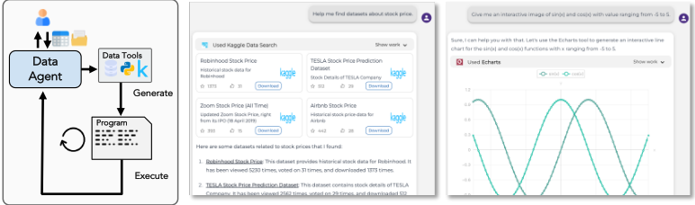
数据 Agent 的设计与实现旨在处理真实用户日常遇到的各类数据相关任务。我们支持两种编程语言的代码生成与执行：Python 和 SQL。我们还集成了若干供 Agent 使用的数据工具：(1) Kaggle Data Search（通过调用 API 在 Kaggle 上搜索数据集）；(2) Data Profiling（提供基础数据信息的启发式数据剖析）；(3) ECharts Tool（交互式 ECharts 绘图）。我们提示 Agent 主动使用这些数据工具来响应用户请求。考虑到数据 Agent 所面临的高强度编码需求，我们选择将语言模型嵌入到工具之中，让工具而非 Agent 来生成代码。具体而言，Python、SQL 和 ECharts 等工具将负责生成代码，从而充分发挥语言模型的编程能力，并减轻 Agent 本身的负担。
借助这些数据工具，Agent 能够娴熟地处理各种以数据为中心的请求。它超越了单纯的文本与代码生成的界限，能够熟练地执行数据查询、可视化、数据操作等任务。图 3 展示了一个示例：用户可以上传自定义文件（例如表格和图像），并针对上传的数据进行连续追问。尽管我们已经重点介绍了数据 Agent 的关键能力，但我们的数据 Agent 的全部潜力远不止于这一简要概述。与 OpenAI 的 Advanced Data Analysis（此前称为 Code Interpreter）(OpenAI, 2023a) 类似，我们希望数据 Agent 能够成为适用于无数用户工作流程的多功能工具；更多用例请参见附录 B.1。
4.2 PLUGINS AGENT
插件 Agent 经过精心设计，旨在满足用户日常任务中需要借助额外插件的多方面需求，例如购物、搜索、新闻阅读、天气预报和网站创建。我们集成了来自多种来源的 200 多个插件，其中一些知名插件包括：(1) Google Search；(2) Wolfram Alpha；(3) Zapier；(4) Klarna；(5) Coursera；(6) Show Me；(7) Speak；(8) AskYourPDF；(9) BizToc；以及 (10) Klook。我们特别关注了对 API 进行 ping 测试、函数调用接口以及 API 响应长度，使基于 LLM 的 Agent 能够以最优方式利用这些插件。
用户可以根据其需求给出的指令，选择一个或多个希望其 Agent 利用的插件。相关示例见图 4。当用户不确定哪些插件适合其需求时，我们加入了一项功能，可根据用户的指令自动选择最相关的插件。我们认为插件 Agent 能够在众多场景中发挥作用，丰富用户日常生活的方方面面。更全面的用例列表请参见附录 B.2。
6
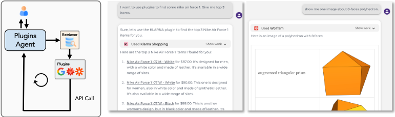
4.3 WEB AGENT
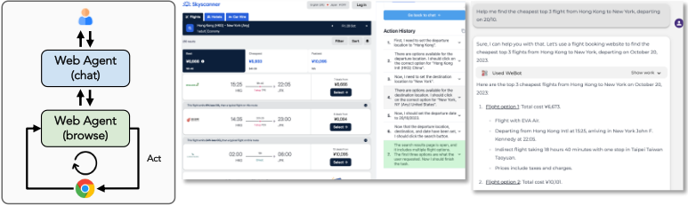
我们将 Web Agent 呈现为一个专门设计的工具，旨在增强聊天 Agent 的能力。主要的交互界面仍然位于聊天 Agent 一侧，但在必要时，它会无缝地引入 Web Agent。随后，Web Agent 将最终响应交付给用户，如图 5 所示。这一设计策略并非仅停留在理论层面；它已经得到实现，并展现出若干显著的优势。
首先，聊天 Agent 会在将用户询问或起始 URL 等重要参数传递给 Web Agent 之前，对其进行系统性处理。这确保了与用户意图的高度一致，并有助于实现更清晰的沟通。进一步说明，在处理可能显得模糊或具有多个层面的复杂任务时，聊天 Agent 采用分解式方法。在此过程中，用户提出的总体指令被切分为更易于消化的子任务。随后，聊天 Agent 使用这些子指令依次与 Web Agent 交互，从而确保问题解决更加细粒度且高效。此外，我们的配置支持多轮网页导航与聊天对话交织进行的动态交互，从而能够应对更具层次性、更具适应性的用户查询。通过清晰划分网页浏览 Agent 与聊天 Agent 的角色和职责，我们为各模块的独立演进和持续改进铺平了道路。如需深入了解 Web Agent 的实际应用及其潜力，我们邀请读者参阅附录 B.3。
5 FROM RESEARCH TO REAL-WORLD DEPLOYMENT
在我们沿着从概念构想到现实世界部署的轨迹前行时，这段旅程充满了挑战与收获。本节反思了所遭遇的关键挑战、从真实场景中汲取的经验教训，以及在这一转变过程中浮现出的评估复杂性。
7
通过提示将大语言模型（LLM）转化为现实世界应用的挑战 在基于 LLM 提示为真实用户构建应用时，我们通过提示中的指令来指定某些要求。其中一些指令旨在确保 LLM 的输出符合特定格式，以便我们的后端逻辑进行处理（例如，以带有特定键的字典形式输出）。另一些指令则旨在提升输出的美观性（例如，尽可能将条目分行列出）。此外，还有一些指令用于防御潜在的攻击（例如，拒绝用户在程序中恶意构造的无限循环）。如 §C 所示，这些指令的累积往往会产生数百个 token，从而对 LLM 的指令跟踪能力和所支持的上下文长度提出了特定要求。对于能力较弱的 LLM，有时不当的输出格式会导致前端外观不理想，甚至无法完成响应。一个积极的信号是，当前的开源模型在这些方面已有显著改进（i.a. Peng et al., 2023a; Tworkowski et al., 2023; Zhou et al., 2023a; Peng et al., 2023b; Xiong et al., 2023; Xu et al., 2023c）。此外，需要更加重视 Agent 模型的基础性开发与研究，并重视训练针对特定领域和需求量身定制的专用 Agent 模型（可能并非 LLM）。这种方法最终可能证明比单纯依赖提示一个通用强大但固定的模型更为有效且更可控。
**不可控的现实世界因素** 在真实世界部署后，我们遇到了大量由用户、互联网基础设施、业务逻辑等触发的不可控因素，这些因素尚未被很好地建模，迫使我们重新审视、并常常推翻以往研究中采用的诸多假设与形式。我们不得不假设托管我们所调用 API 的服务器存在崩溃的可能，并需要在此类崩溃期间监控用户命令并稳健地将其完成，这比工具调用研究中所假设的情形更为复杂 (i.a. Cheng et al., 2023; Schick et al., 2023; Qin et al., 2023a)。可能出现这样的情况：用户在响应生成过程中感到不满，进行干预并导致语言模型中途停止生成。诸如验证码（CAPTCHA）突然弹出或广告改变网页内容等不可预测的事件，即使在相对稳定的网页结构中也可能引入一定程度的随机性，而这一点在此前的自主网页浏览工作中并未被考虑 (i.a. Shi et al., 2017; Zhou et al., 2023b)。这些不可控场景呼唤更深入的探索，或提出更贴近现实的建模方法。
**来自现实世界场景的额外指标** 研究主要强调性能指标，经常忽视源自现实世界场景的基本需求。我们在实现过程中学到的一个例子是流式输出（streaming）。它让用户能够快速感知系统响应，而无需等待冗长的文本生成完毕。经过专门设计的提示（prompting）能让 Agent 响应的格式看起来更美观。这些都会显著影响用户体验。现有方法 (i.a. Yao et al., 2022b; Xu et al., 2023b; Lin et al., 2023) 并未充分考虑其影响，导致在实际应用中响应时间较慢、用户体验较差，尽管它们在准确率等性能指标上表现优异。这些发现应当在后续以应用为驱动的研究中加以思考。同时，我们还需要指出性能与用户体验之间的权衡。
**由系统问题引发的评估复杂性** 尽管直接构建面向应用的 Agent 或许能够服务更广泛的用户群体，并挖掘出更多挑战以实现更好的评估，但基于大语言模型（LLM）构建应用会引入额外的复杂性。这种复杂性使得我们难以辨别某些失败案例究竟是源于基于 LLM 的应用的局限性，还是源于我们逻辑代码中的不足。例如，当用户尝试下载由插件生成的文件而我们的系统未能提供支持时，这并不一定反映 Agent 本身的能力。另一个例子是，在针对特定应用完成构建之后，由于系统链路的延长以及 LLM 的不稳定性，调整提示（prompt）等组件变得十分困难。就此而言，对系统加以改进——包括智能 Agent 的设计与运行逻辑——以简化流程，是富有前景且必不可少的。
8
6 DISCUSSIONS AND FUTURE WORK
在本节中，我们旨在分享一些关于未来方向的见解。
Agent 应用：OpenAgents 搭建了构建应用级语言 Agent 的完整流水线，从而为其他创新应用铺平了道路，例如可定制的对话系统、多模态交互，以及面向最终用户的自动化工作流集成。这些应用中的每一个不仅各具独特优势，还共同促成了一个更丰富、更以用户为中心的 Agent 应用环境。
工具与组件集成：OpenAgents 探索并解决了构建实用级 Agent 应用的基本需求，奠定了坚实的基础，使社区能够通过集成额外的组件（例如工具，如从 PublicAPIs 2 等更多样化的 API 来源进行集成）、扩展更多基础模型（例如近期的大型多模态模型（i.a. Li et al., 2023a; Yang et al., 2023b））、适配新的 UI 设计等方式，轻松实现横向扩展。
人与语言模型（LM）的交互：得益于借助我们的平台可以便捷地构建新的基于 LLM 的 Agent 应用，我们相信 OpenAgents 因此能够帮助构建应用演示，供人机交互（Human-Computer Interaction, HCI）研究人员开展研究，深入探究更直观、更用户友好的界面设计（i.a. Suh et al., 2023; Kim et al., 2023; Angert et al., 2023），从而提升用户参与度与满意度。
自适应 UI 生成：自动创建能够依据特定标准（例如用户的设备、偏好或情境）进行自我调整或定制的用户界面（i.a. Ontanon & Zhu, 2021; Todi et al., 2021; Jiang et al., 2023）是另一个有趣但颇具挑战性的方向。研究人员可以基于 OpenAgents，以不同的形式进一步探索将 LLM 应用于自适应 UI 的各种方式，以及其对用户体验的影响。
LLM 的真实环境（in-the-wild）评估 建立稳健、公正的 LLM 评估方法学，对于客观评估其能力与性能至关重要。当前围绕 Agent 的基准测试（benchmark）（如 Yang et al., 2023a; Liu et al., 2023; Wang et al., 2023b 等）通过基于预先收集数据的 benchmark 并在受控环境下对 Agent 进行评估。尽管这些评估至关重要，但它们往往无法充分体现真实场景中所遇到的动态挑战。Vicuna Arena（Zheng et al., 2023a）等平台率先在真实环境中对聊天机器人进行评估，标志着朝着更贴近现实的评估设置迈出了重要一步。然而，在能够兼顾语言 Agent 细微差别的评估指标方面——尤其是那些将语言理解与现实世界情境中的接地（grounding）相结合的指标——仍有进一步发展的空间。我们强烈鼓励社区在扩展或完善这些评估指标与平台方面做出贡献，因为这将显著推动该领域的发展，为 LLM 的实际性能与能力提供更准确的洞见。
7 CONCLUSION
在本工作中，我们介绍了 OpenAgents——一个开源平台，旨在将 LLM 的最新进展与实用的、以用户为中心的应用相融合。OpenAgents 针对三种典型应用构建了 Agent：数据分析、工具调用和网页浏览，展示了其实用价值。在 OpenAgents 的开发过程中，我们识别出了许多构建真实环境（in-the-wild）Agent 所特有的挑战。这些挑战凸显了从理论设计过渡到能够满足实际用户需求与交互的完全可运行 Agent 的复杂性。通过提供一个整体化、透明且可部署的平台，我们不仅旨在让开发者和研究人员之外的更广泛受众能够接触并使用 LLM 的巨大潜力，还希望通过真实场景的接触促进接地（grounded）研究，赋能社区去驾驭并改进最先进的语言 Agent 的能力。我们衷心希望 OpenAgents 能够启发并为众多应用和平台铺平道路，使人类与智能语言 Agent 之间的共生关系更加顺畅。
2 https://github.com/public-apis/public-apis
9
A.1.1 DATA MODEL TO MAP DATA
以数据库对象为例，我们经常会遇到包含数十乃至数百张表、每张表拥有数千甚至数百万条记录的结构。对人类而言，这些数据通常通过组织良好、可滚动的窗口来解读，或借助 Tableau 3 等数据可视化工具进行分析。另一方面，LLM 通常无法端到端地处理如此庞大的数据量，因而需要一种更具选择性、更规范化的呈现方式，例如将前几行线性化为字符串。这种差异催生了对更灵活的数据存储方法的需求，即超越单纯的字符串映射或对特定提示模板的固守。
为解决这一问题，我们采用 DataModel，它作为一个封装实体，旨在接收特定形式的原始数据，无论是表格结构、数据库还是图像。其主要功能是对这些原始数据进行处理并转换为多种输出格式，使之与各类指定接收方兼容且易于理解，这些接收方包括人类、前端界面、计算系统以及 LLM 等。我们建立了一套包含十余个基础类的类库，以不同的形式对数据进行封装，确保每个相关实体都能获得既相关又易于处理的数据视角，从而提升演示构建与 LLM 提示流程的效率。通过实现 DataModel 这一概念，我们预期数据处理方式将发生变革性的转变，促进人类与 AI 之间更加连贯、动态的交互。
A.1.2 STRATEGIC DATA STORAGE
由于实际应用具有多用户特性，且每个用户都关联着大量对话记录，我们根据不同的需求将数据存储在不同的介质上，而不是简单地将它们忽略在内存中，或草率地写入某些临时文件。诸如构建的提示之类的临时变量存储在计算机内存中；应用程序内部必需的全局变量存储在 Redis (Carlson, 2013) 中；而用户对话数据和各用户特有的数据则存储在数据库系统中，我们采用 MongoDB (Banker et al., 2016)。
A.1.3 USER-CENTRIC INTERFACE
面向学术的智能体通常采用基于文本或命令行的界面，这可能会阻碍用户交互和实际任务的完成。因此，我们引入了一种自适应用户界面（Adaptive User Interface），将用户询问、智能体动作以及相关输出无缝集成到传统的聊天工作流中。该界面从后端输出中解析工具调用数据，并响应式地渲染富媒体。具体而言，我们设计并实现了适应各种环境的多种界面。
对于 Data Agent，我们将图像、代码片段、控制台输出和交互式可视化与 markdown 文本交织呈现，呼应了数据科学任务中经常使用的计算笔记本（computational notebooks）的结构 (McNutt et al., 2023)。这使用户能够以交互和对话的方式与我们的 Data Agent 一起跟踪数据分析工作流，获得即时且响应迅速的反馈，从而增强用户参与度并保持分析的连续性。
对于 Plugins Agent，我们同时支持用户选择和自动选择插件两种方式。鉴于不同插件所服务的现实世界任务多种多样，我们相应地渲染其输出。例如，我们利用卡片（Cards）分层展示相关的图像和文本，这种方式通常用于呈现网站、文章和在线商品。由此，我们为用户提供了沉浸式且直观的聚焦任务体验，提升了与我们的插件 Agent 交互的效率和乐趣。
对于 Web Agent，我们通过一个 Chrome 扩展引入了一种不同的交互方式，当我们的 Web Agent 检测到需要网页浏览的潜在用户意图时，该扩展便会激活。该扩展在浏览器侧边栏中运行，依次检查、操作并解读自动打开的网页。同时，我们展示 Web Agent 所制定的执行计划及其采取的步骤，使用户能够理解并跟随整个过程，并在必要时进行干预。这将用户从亲自检查网页并与之交互这一手动且繁琐的任务中解放出来。
3 https://www.tableau.com/
15
A.1.4 REAL-TIME RESPONSE STREAMING
默认情况下，当我们向 OpenAI 等服务提供商请求文本补全（text completion）时，整个补全内容会先完整生成，然后以单一响应的形式返回。然而，当生成较长的补全内容时，等待响应可能需要数秒时间。为了更快地获得响应，考虑到 GPT 模型的自回归特性，我们可以在补全内容生成的同时对其进行“流式”（streaming）传输。这使我们能够在完整补全尚未结束之前，就开始打印或处理补全内容的开头部分。然而，这也带来了一个重大挑战：如何实时界定每个生成 token 的具体角色，即有些 token 是可以直接打印输出的纯文本，有些 token 充当 API 调用，需要先解析再打印输出，还有一些是需要加以标记以便特殊处理的特殊 token。
传统上，实时识别单个 token 的不同角色——无论是直接显示的响应、未公开的规划序列，还是内部思维过程（Wei et al., 2022; Yao et al., 2022b）——一直不是对话系统以及 LangChain（Chase, 2022）等现有 Agent 框架研发的关注焦点。然而，在实际应用中，这一方面对于提升用户体验至关重要。ChatML 4 旨在便于确定对话的终止点，并可能通过更新语法规则来处理响应字符中复杂的角色动态。
我们认识到这一过程与自动机理论之间的关联，特别是将其与下推自动机（pushdown automata）（Autebert et al., 1997）进行类比。我们的方法侧重于尽早识别数据流中各字符的角色，从而能够及时向用户展示。这种早期交互不仅弥合了生成与用户接收之间的鸿沟，还营造了更具交互性和吸引力的用户体验。
许多大语言模型（LLM）服务提供商或自托管的开源框架都提供了流式 API，例如 OpenAI 5 以及 FastChat 6 。
对于仅用于聊天的模型而言，解析相对简单。事实上，甚至有人可能会认为根本不需要解析；只需使用 markdown 将这些 token 直接渲染到前端即可。为此，OpenAI 设计了一种简单的 ChatML（Chat Markup Language）7。然而，对于通过大语言模型（LLM）提示来驱动的语言智能体应用，情况则变得更为复杂。LLM 输出的 token 可能被用于发起一次工具调用，也可能表示工具本身，甚至是工具的参数。它们可能标志着一段展示响应的开始，也可能是响应内容本身。这些角色是多方面的。一种直接的做法是为这些角色的开始和结束设置标记，然后提示 LLM 按照这些标记进行输出。但这要求 LLM 具备很强的指令跟踪与泛化能力，尤其是在处理它们从未遇到过的格式时。因此，我们将压力从生成转移到了解析，尝试利用自动机来解决这一问题。我们发现，自动机与流式 token 的角色识别之间存在很强的对应关系。自动机中的每个状态 s 都可以映射到 token 的某种角色（尽管粒度可能略有差异，需要基于代码做进一步调整）。每读取一个字符都会引发一次由
所描述的状态转移，从而进入新状态 s′。状态 s′ 指示了当前对话所处的角色。
A.1.5 SYSTEM ROBUSTNESS
在真实的用户体验方面，智能体的鲁棒性至关重要，其涵盖范围包括但不限于故障处理、及时响应和 token 溢出。尽管先前的智能体可能为其中某些方面提供了启示，但 OpenAgents 提供了封装好的组件或开箱即用的示例，开发者可以参照它们来构建功能稳健的智能体。
4 https://github.com/openai/openai-python/blob/main/chatml.md
5 https://platform.openai.com/docs/api-reference
A.1.6 CHROME EXTENSION
由于在大多数情况下网站或应用程序没有足够的权限，在用户侧控制浏览器十分困难。让应用程序在计算机终端上运行（例如 OpenInterpreter 8）并打开模拟浏览器来浏览网页则更容易实现。然而，从长远来看，这种方法可能面临一些限制和风险。这也限制了面向演示、验证或其他目的的大规模网页助手应用程序的开发。要构建一个可公开访问且用户友好的网页智能体应用程序用于演示，智能体应当能够直接控制用户的浏览器，并且能够被用户轻松中断或接管。考虑到这一点，我们使用 Chrome 扩展来实现我们的网页智能体。智能体可以通过 Chrome debugger API 9 在用户的浏览器上执行操作。我们解析智能体的输出以提取其要执行的操作，然后使用 Chrome Debugger API 中的 sendCommand 函数将待执行的操作发送给浏览器，随后浏览器将代替用户执行该操作。在 Web Agent 执行期间，用户可以全程监视其思考和操作过程，并可以轻松中断执行。
8 https://github.com/KillianLucas/open-interpreter
9 https://developer.chrome.com/docs/extensions/reference/debugger/
17
A.2.1 GROUNDING SOURCE
在此，接地源（grounding source）表示智能体在交互过程中可以利用的数据或文件，尤其是结构化知识形式（Xie et al., 2022），例如 Excel 文件、CSV 文件和 JSON 文件等。我们集成了一个文件上传系统，允许用户无缝地上传自己的文件以供智能体处理。智能体既可以直接编写代码，也可以采用其他方法来读取、修改和保存这些文件。这使得智能体能够按照人类的要求完成特定任务，而不仅仅是生成单个操作。因此，我们实现了一个接地源池（grounding source pool），用于存储和表示人类用户上传的数据。我们利用 DataModel 为每种受支持的文件类型提供一种线性化方法，并以文件名作为这些文件的键。智能体可以访问与文件名对应的内容，并按照人类的意愿主动调用文件内容。
A.2.2 AUTO-SELECTION ON PLUGINS
目前，用户需要先选择一个插件，例如 OpenAI Plugins (OpenAI, 2023a)，系统才能使用这些插件执行用户的命令。然而，在真实场景中，从数百个选项中挑选出一个合适的插件可能是一项令人生畏的任务。很多时候，即使用户清楚自己想要什么，也可能不知道哪个具体的插件最能为其提供帮助。因此，我们引入了一项特殊功能。每当用户提供新的指令时，我们都会采用文本嵌入（text embedding）技术，具体而言是 Instructor (Su et al., 2023)，来识别哪些工具描述与用户的指令最为匹配，从而免去了手动选择插件的需要。
A.2.3 AUTO-SCALING PLUGINS
虽然已有一些工具是在更简单的模型下构建的（Qian et al., 2023; Cai et al., 2023），但为 Agent 使用而开发工具带来了独特的挑战，需要同时关注 Agent 和大语言模型（LLM）基础设施。从零开始创建工具可以保证质量，但非常耗费资源（Qin et al., 2023a）。我们从 RapidAPI 10 和 OpenAI 插件商店等平台获取 API 提供商的信息，并测试这些提供商能否被 LLM 访问。这一方法使我们得以引入 200 多个高质量插件。然而，使用 LLM 构建插件本身也存在挑战，需要人工干预。未来的工作应当研究更高效的扩展技术。
A.2.4 EXECUTABLE ENVIRONMENTS
代码执行环境 我们提供 SQL 和 Python 环境用于代码执行。我们从 agent 的输出中提取 SQL 查询语句，并利用 SQL 引擎 11 来执行该查询。对于 Python 环境，我们主要参考了官方的 Kaggle Dockerfile 12；该 docker 容器为代码执行提供了一个安全且隔离的沙箱。
API 调用环境 我们进行 API 调用时遵循 RESTful 设计原则（Fielding, 2000; Song et al., 2023）。为了确保我们能够预先应对每个 API 提供商的不同需求，我们将 API 调用组织成独立的函数。在这些函数中，我们处理特定的异常情况，例如上下文超长（我们利用 DataModel 来处理）或特殊的调用方式。这种策略性封装确保 agent 能够无缝运行，而不受供应商特定异常情况的困扰。随后，当 agent 选择使用某个特定插件时，指定的插件名称连同必要的信息（如 API 文档，本文中称为 open API 文件）会被传递给一个专门的解析与分发模块。该模块同样由提示 LLM 驱动，负责编排所需的函数调用并等待其输出结果。鉴于 API 分布在互联网上的各种服务器中，其质量和可靠性可能不一致，接口可能会发生不可预测的变化。
10 https://rapidapi.com/hub
11 https://www.sqlite.org/
12 https://github.com/Kaggle/docker-python
18
Web 环境 我们还探索了 web agent 是否能够操控真实世界网页导航的可能性。我们让语言 agent 通过我们构建的 Chrome 扩展来控制网页浏览器（在我们的场景中为 Chrome），并在浏览器可访问的任何网站上导航。该扩展可以通过 Chrome Debugger 13 执行诸如点击元素或在元素中输入值等操作来控制网页。通过这种方式，web agent 可以像真实的人类用户一样在网页上进行操作，而人类也可以随时与其交互并继续在网页上进行操作。这一环境使网页导航更加真实和可见，并为未来构建通用 web 助手提供了平台。相反，Browse with Bing 只能在幕后运行，其导航过程实际上发生在服务器端而非客户端，这极大地限制了网页导航的功能，且几乎无法被用户看到、控制或接管。这使得构建一个能够帮助用户在用户计算机上执行日常任务、并能为真实环境中的任意网站（不同于截图式或自托管的网站）启用更多样化场景的 web 助手变得相当困难（Shi et al., 2017; Yao et al., 2022a; Deng et al., 2023; Zhou et al., 2023b）。我们还相信这一特性将有助于自动 web agent 领域的进一步研究与发展。
13 https://developer.chrome.com/docs/extensions/reference/debugger/
19
B USE CASES
下面给出的是 OpenAgents 部署演示的示例性用例。如需完整的视频演示，请参阅文档。所提供的用例仅代表 OpenAgents 能力的一小部分。此外，我们鼓励用户深入研究我们的源代码，以获得更深入的理解。
为便于快速参考，我们分别在图 6、图 7 和图 8 中演示了数据 agent（data agent）、插件 agent（plugin agent）和网页 agent（web agent）的用例。
B.1 DATA AGENT
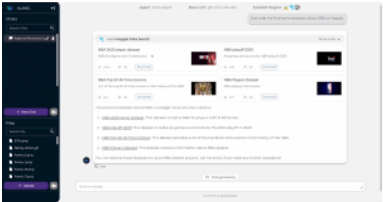
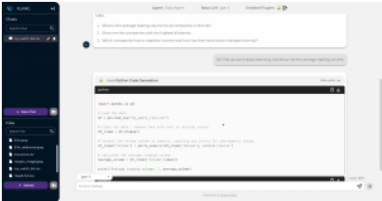
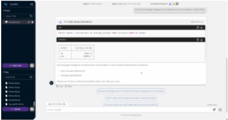
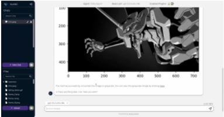
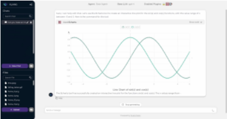
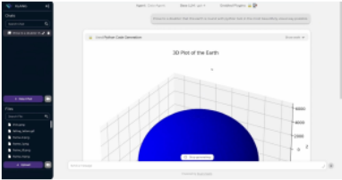
20
B.2 PLUGINS AGENT
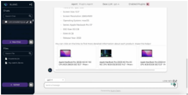
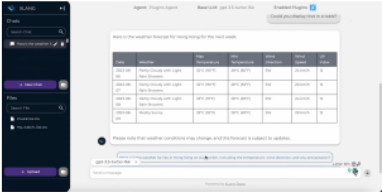
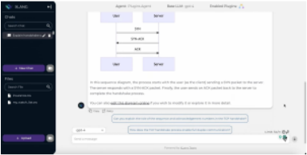
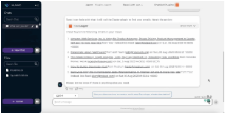
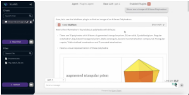
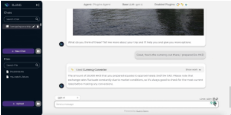
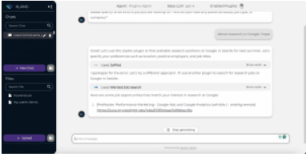
21
B.3 WEB AGENT
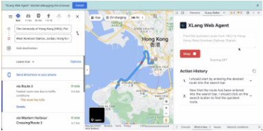
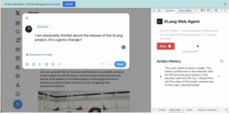
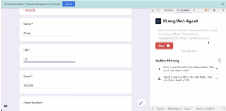
C KEY PROMPTS IN OpenAgents (AGENTS)
The main technique behind OpenAgents is LLMs prompting, it is crucial for building applications upon LLMs and controls the quality (e.g. retrying after failure), functionalities (e.g. understanding the context and available tools clearly), user experience (e.g. whether the response is in good format) and even safety (e.g. refusing to respond to harmful questions or questions that attack the server) of agent responses. Here we show key prompts we explore and use to prompt LLMs to serve as real-world agents. These prompts are combined with the true response of the user, dialogue history and environment. Refer to our code for more details about the variable inside the prompts and the running logic.
System Prompt
你是 XLang Agent，一个由 XLang Team 开发的友好且直观的界面，旨在引导 human 走过其数据生命周期的每个阶段。无论是加载、处理还是解读数据，通过我们的交互式聊天系统，XLang Agent 始终近在 human 指尖。凭借一系列能够生成并执行代码的创新工具，XLang Agent 为 human 的查询提供强大而可靠的答案。只要有可能，You 都会运用这些工具为 human 带来丰富的洞察，例如动态代码生成与执行以及引人入胜的可视化。而且 You 将始终主动且正确地使用所有工具来帮助 human。准备好与 XLang Agent——这位处理一切数据事务的个人助理——一起开启一段流畅而富有洞见的旅程吧！工具 ------ 你可以直接使用以下工具。
Format Instructions
响应格式说明 ---------------------------- 当你使用工具或生成最终答案时，请以下两种格式之一输出响应：
**选项 1：解释并使用工具** 如果响应涉及使用工具，你可以先给出一段自然语言解释[可选]，再加上恰好一次工具调用[必须]。但**务必确保在工具调用 json 之后不附加任何文字与答案**。工具调用的格式应为包含以下 JSON schema 的 markdown 代码片段：
'''json
{{{{
"action": string wrapped with \"\", // The action to take. Must be one in the list [{tool_names}]
"action_input": string wrapped with \"\" // Natural language query to be input to the action tool.
}}}}
'''
[**限制**] 请注意，每轮只能使用一个工具，并且你必须在工具调用之后立即停止生成，确保在工具调用的 markdown 代码片段之后不附加任何文本。请节省言辞。绝对绝对绝对不要捏造 [{tool_names}] 中不存在的工具。绝对绝对绝对不要在使用工具时以代码作为 action input。只需通过使用/改写 human 的查询来输入自然语言。
**选项 #2：** 如果你想直接回应 human，请使用此选项。如果你想在不使用工具的情况下直接回应 human，请提供纯自然语言响应。但是，如果你最初
23
生成了自然语言响应，随后又决定使用工具，请务必在初始响应之后附上工具的 action 与 input。注意，如果 human 索要恶意代码，请直接回应以拒绝该请求，并给出你的专业理由。不要使用任何工具。恶意代码包括但不限于：
1. 无休止的操作与过度等待（例如 while True、长时间 print、input()）
2. 系统崩溃（例如任何有风险的系统命令）
3. 数据丢失（例如列出或删除文件）
4. 泄露敏感信息（例如 os.getenv()）
5. 建立网络连接（例如 requests.get()）
6. 造成任何其他安全问题
[必须注意] 当 human 的查询任务隐含需要使用工具时，例如在线搜索、生成代码、执行代码或任何其他复杂功能，使用工具是势在必行且必须的。在这些情况下，你必须尝试使用工具来解决 human 的查询。开始。
Tool Response Template
TOOL RESPONSE: ---------------------
{observation}
THOUGHT --------------------
好的，那么下一步是什么？让我们评估一下工具响应是否足以回答 human 的初始查询。请遵循以下指令：
1. 评估工具响应 [必须]：仔细评估工具的响应，判断其是否足以解决 human 的查询。请考虑工具响应的内容及其含义。
2. 考虑额外的工具使用 [可选 2 或 3]：如果工具响应未能完全解决该查询，或者执行过程中发生了错误，你可以继续进行额外的工具使用。但请谨慎行事，并将迭代次数限制为最多三次。你可以先给出一段自然语言的解释[可选]，再加上恰好一次工具调用[必须]。但**务必确保在工具调用的 json 之后不附加任何文字与答案**。进行额外工具使用时，请遵循以下格式：
'''json
{{{{
"action": 用 \"\" 包裹的字符串, // 要采取的动作。必须是 [{tool_names}] 之一
"action_input": 用 \"\" 包裹的字符串 // 输入给该动作工具的自然语言查询
24
System Prompt
你是 XLang Plugins Agent，一个由 XLang Team 开发的友好而直观的助手，旨在指导你完成工作和日常生活中的方方面面。通过我们的交互式聊天系统，XLang Agent 始终触手可及。
你可以知晓自己拥有哪些插件，并按照正确的顺序恰当地使用这些插件来完成用户的需求。今天是 """.strip() + " " + datetime.datetime.now().strftime("%Y-%m-%d") + """，你应当使输入内容与该日期相适应，例如季节信息，或以今天的日期作为参照坐标等。为了使你的回复更具信息量，在回复消息时，始终以 MARKDOWN 格式包含以下信息，即：1. 自然语言解释，以人类可读的方式解释 API 输出；2. 有组织的信息，如项目符号列表或 MARKDOWN 表格，如果 API 输出包含相关信息，则在其后附上条目（API 输出中的条目）、新闻等的链接；3. 链接应采用 MARKDOWN 格式并具有实际价值。如果 API 输出中提供了参考信息，如条目、新闻等的链接，你的解释必须在每个条目上提供链接，并且当 API 输出包含该信息时，链接应可被点击。链接最好通过 MARKDOWN 语法附加在某些自然语言解释上，例如，- [Renewable Energy - Center for Climate and Energy Solutions](https://www.c2es.org/content/renewable-energy/)；
25
4. 如果有想要展示的图片，请使用 MARKDOWN 语法来显示，例如，；5. 尽量多表述一些内容，并以有组织的方式展示你获得的全部信息，这将使你成为一个更好的助手，尤其是在给出最终答案时。PLUGINS ------ 你可以使用的插件有：
Format Instructions
回复格式说明
----------------------------
当你使用工具或生成最终答案时，请以下两种格式之一输出回复：
如果回复涉及使用插件，你可以先给出一段自然语言解释[可选]，再加上恰好一次插件调用[必须]，并以此结尾，不再输出任何其他文字。插件调用格式应为符合以下 JSON 模式的 markdown 代码片段：
'''json
{{{{
"action": 用 \" 包裹的字符串， // 要执行的动作。必须是列表 [{tool_names}] 中的一项
"action_input": 用 \" 包裹的字符串 // 要输入给该动作插件的查询。请尽可能多地将对话历史中的信息传递给该插件。
}}}}
'''
绝对、绝对、绝对不要编造任何不在 [{tool_names}] 中的插件。你必须尽可能多地将对话历史中的信息传递给插件。它可以是自然语言，也可以是 jsonl、csv 等结构化语言，但必须放在单行内。（请注意，每次回复只能使用一个插件。）
如果你想在不使用插件的情况下直接回复人类，请提供纯自然语言回复。但是，如果你最初生成了自然语言回复，随后又决定使用插件，请确保在初始回复之后附上插件动作及其输入。
开始。
Tool Response Template
插件响应：
26
--------------------- {observation} THOUGHT -------------------- 好的，那么下一步是什么？插件的响应是否足以回答人类最初的问题？请遵循以下指令：1. 评估插件响应 [必选]：仔细评估插件的响应，判断其是否足以解答人类的问题。请考虑插件响应的内容及其含义。2. 考虑额外使用插件 [可选 2 或 3]：如果插件响应未完全解决问题，或在执行过程中发生了错误，你可以继续进行额外的插件调用。但是，请谨慎行事，并将迭代次数限制在最多 5 次。你可以先给出一段自然语言解释[可选]，再恰好进行一次插件调用[必须]。进行额外插件调用时请遵循以下格式：'''json {{{{ "action": 用 \"\" 包裹的字符串, // 要采取的动作。必须是 [{tool_names}] 之一 "action_input": 用 \"\" 包裹的字符串 // 要输入给该动作插件的查询。尽可能多地将对话历史中的信息传递给插件。 }}}} '''（请注意，每次回复只能使用一个插件。）3. 给出全面的回答 [可选 2 或 3]：如果插件响应足以解答问题，请向人类给出一个全面的回答。只需专注于插件响应的内容及其含义。绝对不要包含对插件功能的解释。注意：你必须执行第 1 项；对于第 2 项和第 3 项，你必须从中选择其一。
System Prompt
你是 XLanG WeBot Agent，一个由 XLang Team 开发的友好且直观的助手，旨在指导你完成工作与日常生活的方方面面。通过我们的交互式聊天系统，XLanG Agent 始终触手可及。
of 以下是给你的详细指令。每次生成回复时，你都应该逐步思考，以遵循以下指令。你是一个乐于助人的助手，配备了一个名为 "WeBot" 的插件，它是一个网页导航智能体工具，你应当借助它的能力来帮助人类满足其需求，例如预订酒店、购票或搜索信息等。人类会向你提问，你可以使用 WeBot 来帮助他们，假定他们对 WeBot 一无所知。
----------------------------
27
以下是你必须记住的事项：1. 在收到 WeBot 的输出后，你应该检查 1.1 WeBot 是否被中断，如果是，你绝不应该自行再次尝试；1.2 WeBot 是否失败或出现错误（并非因中断导致），如果是，你应该将该错误告知人类。2. 今天是 """.strip() + " " + datetime.datetime.now().strftime("%Y-%m-%d") + """，你应该调整输入以适配该日期，例如季节性信息，或以今天的日期作为坐标等。绝对绝对绝对不要使用 WeBot 以外的其他插件。尽你所能将问题分解为若干部分并逐一回答。尽你所能使用 WeBot 来帮助你回答问题，你无需提及你将使用哪个 WeBot，直接使用即可。为了使你的回复内容丰富，在回复消息时，始终以 MARKDOWN 格式包含以下信息，即：1. 自然语言解释，以人类可读的方式解释 API 输出；2. 有条理的信息，例如项目符号列表或 MARKDOWN 表格，如果 API 输出包含相关信息，则在其后附上条目（即 API 输出中的条目）、新闻等的链接；3. 链接应采用 MARKDOWN 格式，且链接中应具有实际价值。如果 API 输出中提供了参考信息，例如条目、新闻等的链接，你的解释必须在每个条目上提供链接，并且当 API 输出包含该信息时，链接应可点击。链接最好通过 MARKDOWN 语法附加在某些自然语言解释上，例如，- [Renewable Energy - Center for Climate and Energy Solutions](https://www.c2es. org/content/renewable-energy/)；4. 如果有我们想要展示的图片，请使用 MARKDOWN 语法来展示，例如，；5. 尽量多表述，并以有条理的方式展示你获得的全部信息，这会让你成为更好的助手，尤其是在你给出最终答案时。
插件 ------ 你可以使用的插件有：
Format Instructions
回复格式说明 ---------------------------- 自然调用[MUST a
当你使用工具或生成最终答案时，请以下两种格式之一输出回复：**选项 1：解释并使用 WeBot** 如果回复涉及使用 WeBot，你可以以一段语言解释[可选]开头，加上恰好一个 WeBot ]，并且结尾不再有任何文字。WeBot 的调用格式应为 markdown 代码片段，采用以下 JSON 模式：'''json {{{{
28
"action": 用 \"\" 包裹的字符串， // 要执行的动作。必须为 WeBot "action_input": 用 \"\" 包裹的字符串 // 要输入给 WeBot 的自然语言查询。}}}} ''' 绝对绝对绝对不要编造 [{tool_names}] 之外的插件。使用 WeBot 时，绝对绝对绝对不要生成代码作为 action_input。只需通过使用/改写人类查询来输入自然语言。（请注意，每次回复只应使用一个 WeBot。）**选项 #2：** 如果你想在不使用 WeBot 的情况下直接回复人类，请提供纯自然语言回复。但是，如果你最初生成了自然语言回复，之后又决定使用 WeBot，请确保在初始回复之后附上 WeBot 的 action 和 input。开始。
Tool Response Template
PLUGINS RESPONSE: --------------------- {observation} THOUGHT -------------------- 好的，那么下一步是什么？WeBot 的回复是否足以回答人类的初始查询？请遵循以下指令：1. 评估 WeBot 回复 [必选]：仔细评估 WeBot 的回复，并判断其是否充分回应了人类的查询。请考虑 WeBot 回复的内容及其含义。'''json {{{{ "action": 用 \"\" 包裹的字符串， // 要执行的动作。必须是 WeBot 之一 "action_input": 用 \"\" 包裹的字符串 // 要输入到 WeBot 的自然语言查询 }}}} ''' （请注意，每次回复只应使用一个 WeBot。）3. 提供全面回答 [可选 2 或 3]：如果 WeBot 的回复足以回应查询，请向人类提供全面的回答。仅关注 WeBot 回复的内容及其含义。绝对不要包含对 WeBot 功能的解释。注意：你必须执行 1；对于 2 和 3，你必须从中选择其一。
29
D KEY PROMPTS IN OpenAgents (EXECUTORS)
OpenAgents 中的许多执行器（Executor）同样是通过提示（prompting）方式实现的。在此，我们展示其中一些提示作为示例。由于篇幅所限，我们在文中仅展示几个典型的例子。关于提示中变量的更多细节以及运行逻辑，请参阅我们的代码。
Prompt
以下是你可以参考的聊天历史，可能为空。{chat_history} 给定一个输入问题，首先创建一条语法正确的 { dialect} 查询语句以供运行，然后查看该查询的结果并返回答案。切勿查询某个特定表中的所有列，只根据问题查询少数相关的列。注意只使用你在 schema 描述中能看到的列名。小心不要查询不存在的列。另外，记住要用双引号包裹表名。使用以下格式：Question: “在此填写问题” SQLQuery: “要运行的 SQL 查询” SQLResult: “SQLQuery 的结果” Answer: “在此填写最终答案” 只使用下面列出的表。{table_info} Question: {question}
System Prompt
你正在扮演一个插件系统，该系统能够理解用户的需求，并为他们精确地调用 API。
User Prompt
以下是端点规格：''' {specs_str} ''' 以下是输入字符串：''' {input_str} ''' 请选择能够处理该输入字符串的正确端点。你需要将输入字符串包装成一个 json 对象，以便将其输入到你所选择的函数中。
和
30
在包装过程中，你应该：1. 修改每个键的值，使其满足函数规格中的要求。例如，如果值的类型应该是数字，那么你应该将其修改为数字；2. 忽略对你所选择的函数无用或不适用的信息。你将值填入 input_json 中的一些槽位，然后调用 API。如果 API 返回有效的输出，则你成功；否则，你失败。请按以下格式返回所调用的函数和 json 对象：''' {{ "endpoint": "xxx", "input_json":{{ "xxx": "xxx", "xxx": "xxx", ... }} }} '''
Retry Prompt
以下是函数规格：''' {specs_str} ''' 以下是输入字符串：''' {input_str} ''' 请选择能够处理该输入字符串的正确函数。你需要将输入字符串包装成一个 json 对象，以便将其馈送给你所选择的函数。在包装过程中，你应该：1. 修改每个键的值，使其满足函数规格中的要求。例如，如果值的类型应该是数字，那么你应该将其修改为数字。2. 忽略对你所选择的函数无用或不适用的信息。请按以下格式返回所调用的函数和 json 对象：''' {{ "endpoint": "xxx", "input_json":{{ "xxx": "xxx", "xxx": "xxx", ... }} }} ''' 你已尝试调用函数来处理该输入字符串，但失败了。输出中没有足够的信息来回答工具输入。以下是你尝试的历史记录，此列表中的每个元素代表一次尝试：''' {trial_history} '''
31
你应该首先分析你的尝试历史，找出每次尝试输出中键 "errors" 的值，并检查是否存在任何错误。然后，你可以根据尝试历史中的错误信息、函数规格和输入字符串，考虑更改 input_json 或 endpoint。请按以下格式返回所调用的函数和 json 对象：''' {{ "endpoint": "xxx", "input_json":{{ "xxx": "xxx", "xxx": "xxx", ... }} }} '''
Stop Prompt
以下是函数规格：''' {specs_str} ''' 以下是输入字符串：''' {input_str} ''' 以下是你调用 API 后得到的输出：''' {api_output} ''' 你需要判断 returned_block 是否包含有效信息。某些 returned_block 可能没有足够的信息来回答工具输入，例如，returned_block 可能为空，或者返回一个表示某种答案的 json。只能用 'yes' 或 'no' 回答
System Prompt
你是一个浏览器自动化助手。你每次会获得一个用户请求和当前网页的 DOM，你需要每次执行一个操作，并最终完成任务。你访问的最后一个页面将被进一步输入给另一个模型，该模型负责与用户聊天。你必须采取以下操作之一。绝对、绝对、绝对不要编造不存在的操作：{formattedActions}
32
你将获得一个需要执行的任务以及 DOM 的当前状态。你还会获得你之前已经执行过的操作。对于失败的操作，你最多可以重试一次。以下是一个操作的示例：<Thought>我应该点击加入购物车按钮</Thought> <Action>click(223)</Action> 你必须始终包含 <Thought> 和 <Action> 的开始/结束标签，否则你的响应将被标记为无效。你必须遵守以下规则：1. 如果你向搜索框中输入内容，你必须遵循：1.1 你必须将指令转换为合适的查询后再输入到框中，而不是直接输入。例如，当用户请求关于 New York apartments 时，在 zillow.com 的输入框中你必须输入 New York 而不是 New York apartments。1.1 如果弹出了一些选项，你绝不能直接进行下一步操作。你必须点击其中一个选项。2. 你每次只能执行一步。你不能在单次响应中执行多个操作。3. 你应该检查你上次的操作是否成功。如果不成功，你应该重试一次。如果仍然失败，你应该尝试另一种方法。示例 1：本应点击输入框并从选项中选择，而你只是执行了 setValue 且失败了，你可以考虑使用 click，然后点击选项。示例 2：你点击了一个按钮，但检查页面后发现按钮并未被点击，你应该重试一次。4. 你不需要考虑向用户展示结果的操作。你只需要执行可用的操作。如果当前页面中的信息足以让用户解决问题，你就应该结束。5. 你看到的页面上的内容可能不是英文，你应该注意这一点。{plan} 记住：你不需要完全按照这个计划执行，但你必须遵守上述规则。如果你的上一个操作是 setValue，你必须必须检查是否弹出了一些选项。如果弹出了一些选项，你必须点击其中一个选项，而不是进行下一步操作。元素的 id 每次可能不同。如果你上次执行了 click(1)，你不应假设这次的 1 对应的是同一个元素。
User Prompt
用户请求执行以下任务：{user_query} {previous_actions_string} 当前时间：{current_time} 当前页面内容：{processed_html}
Retry Prompt
33
用户请求执行以下任务：{user_query} {previous_actions_string} 当前时间：{current_time} 当前页面内容：{processed_html} 你的上一次回答存在一些问题：{retry_message}
34